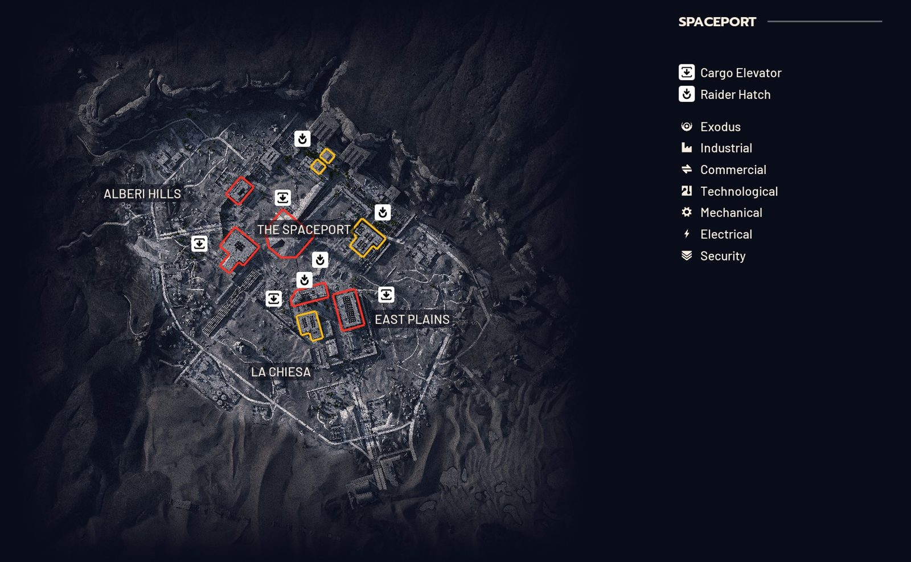

Spaceport map
A former launch site where escape shuttles once departed for the heavens.
Difficulty ●●●○○Round 30 min (40 min during Hidden Bunker)Unlock 12 rounds

Open the interactive mapBack to Speranza Field Guide
The interactive map has a detailed, zoomable version with every room labelled, a key, a room finder and your own pins saved on your device.
Rooms and areas on Spaceport
- Arrival Building
- Car Park
- Container Storage
- Control Tower A6
- Departure Building
- East Container Yard
- East Hangar
- Fuel Control
- Fuel Depot
- Fuel Lines
- Fuel Processing
- Fuel Storage
- Jiangsu Warehouse
- Launch Towers
- Little Hangar
- Maintenance Hangar
- North Trench Tower
- Rocket Assembly
- Security Checkpoint
- Shipping Warehouse
- South Trench Tower
- Staff Parking
- The Trench
- Vehicle Maintenance
- Water Towers
- West Container Yard
- West Hangar
Markers on the key: Cargo Elevator, Raider Hatch.
Notes
- Hidden Bunker is a major condition that extends the round to 40 minutes.
Free fan-made reference, not affiliated with Embark Studios. Map data from the ARC Raiders Wiki (CC BY-SA 4.0).